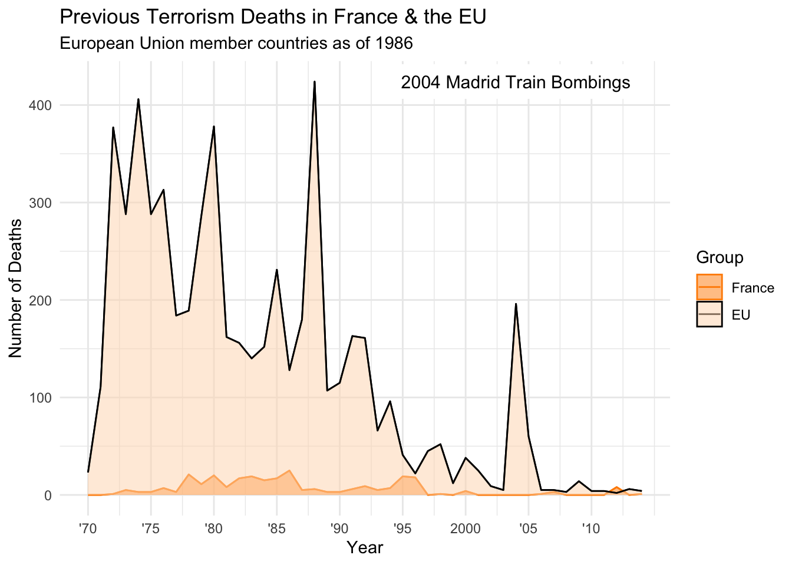
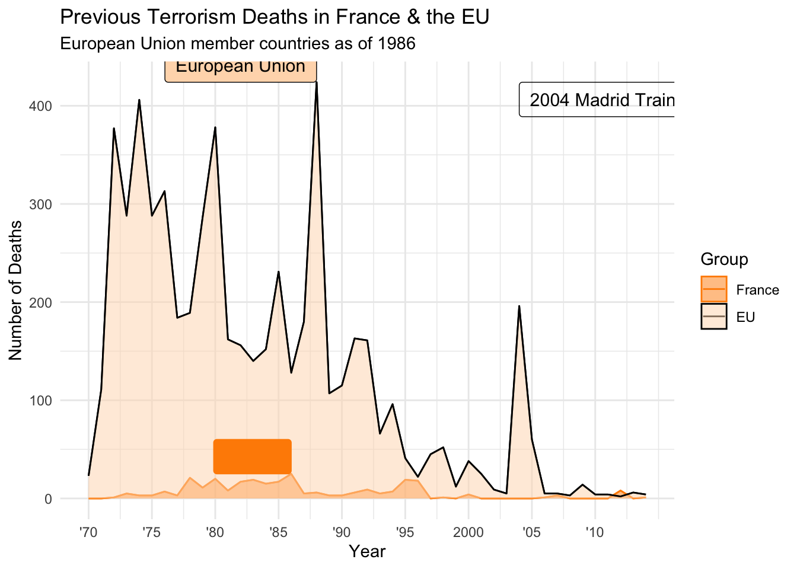
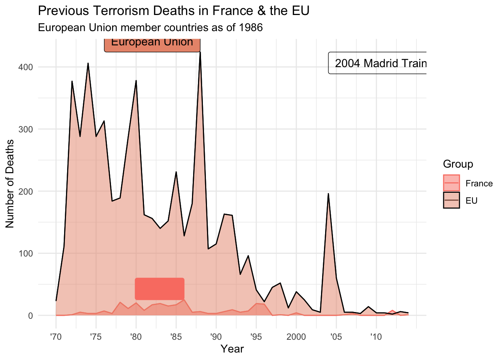
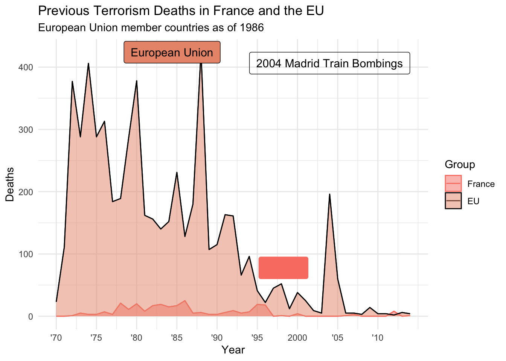

── Conflicts ────────────────────────────────────────── tidyverse_conflicts() ──
✖ readr::col_factor() masks scales::col_factor()
✖ purrr::discard() masks scales::discard()
✖ dplyr::filter() masks stats::filter()
✖ stringr::fixed() masks recipes::fixed()
✖ dplyr::lag() masks stats::lag()
✖ readr::spec() masks yardstick::spec()
ℹ Use the conflicted package (<http://conflicted.r-lib.org/>) to force all conflicts to become errors
library(ggplot2)library(plotly)
Attaching package: 'plotly'
The following object is masked from 'package:ggplot2':
last_plot
The following object is masked from 'package:stats':
filter
The following object is masked from 'package:graphics':
layout
library(knitr)library(kableExtra)
Warning: package 'kableExtra' was built under R version 4.3.2
Attaching package: 'kableExtra'
The following object is masked from 'package:dplyr':
group_rows
library(gt)library(reshape2)
Attaching package: 'reshape2'
The following object is masked from 'package:tidyr':
smiths
Spurious Correlation Table
After copying & pasting the Table contents and the contents from my final dataframe, I asked ChatGPT the following prompt: “I want to use an R package to create a publication-level quality table using the table I provided as well as the dataset”. Below is the code that Chat GPT provided me:
# Load required librarieslibrary(knitr)library(kableExtra)# Create a dataframe with your datadf <-data.frame(Eating_or_Drinking =c("Egg rolls", "Soda", "Shellfish", "Lemonade", "Shellfish", "Fried/breaded fish", "Beer", "Table salt", "Coffee", "Energy drinks", "Lemonade", "Steak with fat trimmed", "Iced tea", "Iced tea", "Raw tomatoes", "Cabbage"),Linked_to =c("Dog ownership", "Weird rash in the past year", "Right-handedness", "Belief that 'Crash' deserved to win best picture", "Left-handedness", "Democratic Party affiliation", "Frequent smoking", "Positive relationship with Internet service provider", "Cat ownership", "Frequent smoking", "Frequent smoking", "Lack of belief in a god", "Belief that 'Crash' didn't deserve to win best picture", "Dog ownership", "Judaism", "Innie bellybutton"),P_Value =c(2.84762e-05, 1.77172e-04, 2.03126e-04, 2.40925e-04, 3.52826e-04, 7.35258e-04, 1.28534e-03, 1.40221e-03, 1.63035e-03, 1.88478e-03, 2.61039e-03, 2.96707e-03, 4.26540e-03, 4.58258e-03, 6.28035e-03, 9.68729e-03))# Create a kable tablekable_table <- df %>%kable(format ="html", escape =FALSE) %>%kable_styling(full_width =FALSE)# Print the tableprint(kable_table)
Unfortunately, the table didn’t print. I am assuming this is due to the faact that kableExtra renders HTML tables. I am now going to prompt ChatGPT again to use another package. After asking ChatGPT to use another package, the following code was provided using the gt() package.
# Load required librarieslibrary(gt)# Create a dataframe with your datadf <-data.frame(Eating_or_Drinking =c("Egg rolls", "Soda", "Shellfish", "Lemonade", "Shellfish", "Fried/breaded fish", "Beer", "Table salt", "Coffee", "Energy drinks", "Lemonade", "Steak with fat trimmed", "Iced tea", "Iced tea", "Raw tomatoes", "Cabbage"),Linked_to =c("Dog ownership", "Weird rash in the past year", "Right-handedness", "Belief that 'Crash' deserved to win best picture", "Left-handedness", "Democratic Party affiliation", "Frequent smoking", "Positive relationship with Internet service provider", "Cat ownership", "Frequent smoking", "Frequent smoking", "Lack of belief in a god", "Belief that 'Crash' didn't deserve to win best picture", "Dog ownership", "Judaism", "Innie bellybutton"),P_Value =c(2.84762e-05, 1.77172e-04, 2.03126e-04, 2.40925e-04, 3.52826e-04, 7.35258e-04, 1.28534e-03, 1.40221e-03, 1.63035e-03, 1.88478e-03, 2.61039e-03, 2.96707e-03, 4.26540e-03, 4.58258e-03, 6.28035e-03, 9.68729e-03))# Create a gt tablegt_table <- df %>%gt() %>%tab_header(title ="Eating or Drinking Linked Characteristics",subtitle ="Association and P-Values" ) %>%fmt_number(columns =vars(P_Value),decimals =4 ) %>%tab_spanner(label ="Linked to",columns =c(Linked_to, P_Value) )
Warning: Since gt v0.3.0, `columns = vars(...)` has been deprecated.
• Please use `columns = c(...)` instead.
Since gt v0.3.0, `columns = vars(...)` has been deprecated.
• Please use `columns = c(...)` instead.
The code ChatGPT provided left me with the following warning:
“Warning: Since gt v0.3.0, columns = vars(...) has been deprecated. • Please use columns = c(...) instead.Warning: Since gt v0.3.0, columns = vars(...) has been deprecated. • Please use columns = c(...) instead.”
Here was ChatGPT’s solution:
# Create a gt table directlygt_table <- df %>%gt() %>%tab_header(title ="Eating or Drinking Linked Characteristics",subtitle ="Association and P-Values" ) %>%fmt_number(columns =c("P_Value"),decimals =4 ) %>%tab_spanner(label ="Linked to",columns =c("Linked_to", "P_Value") )# Print the tablegt_table
Eating or Drinking Linked Characteristics
Association and P-Values
Eating_or_Drinking
Linked to
Linked_to
P_Value
Egg rolls
Dog ownership
0.0000
Soda
Weird rash in the past year
0.0002
Shellfish
Right-handedness
0.0002
Lemonade
Belief that 'Crash' deserved to win best picture
0.0002
Shellfish
Left-handedness
0.0004
Fried/breaded fish
Democratic Party affiliation
0.0007
Beer
Frequent smoking
0.0013
Table salt
Positive relationship with Internet service provider
0.0014
Coffee
Cat ownership
0.0016
Energy drinks
Frequent smoking
0.0019
Lemonade
Frequent smoking
0.0026
Steak with fat trimmed
Lack of belief in a god
0.0030
Iced tea
Belief that 'Crash' didn't deserve to win best picture
0.0043
Iced tea
Dog ownership
0.0046
Raw tomatoes
Judaism
0.0063
Cabbage
Innie bellybutton
0.0097
Terrorism Graph
I provided ChatGPT with the csv file contents, as well as a verbal description of what I wanted to recreate. Here was ChatGPT’s original response:
eu_terrorism_fatalities_by_country <-read.csv("~/Desktop/BIOS8060E/emmahardinparker-MADA-portfolio/presentation-exercise/eu_terrorism_fatalities_by_country.csv") # Combine columns for FranceFrance <- eu_terrorism_fatalities_by_country$France# Combine columns for the rest of the EUEU <-rowSums(eu_terrorism_fatalities_by_country[, c("Belgium", "Denmark", "Germany", "Greece", "Ireland","Italy", "Luxembourg", "Netherlands", "Portugal", "Spain","United.Kingdom")])combined_data <-data.frame(Year = eu_terrorism_fatalities_by_country$iyear, France = France, EU = EU)# Reshape the data for plottingcombined_data_long <- reshape2::melt(combined_data, id.vars ="Year", variable.name ="Group", value.name ="Deaths")# Plot the density plotggplot(combined_data_long, aes(x = Year, y = Deaths, color = Group, group = Group)) +geom_line() +labs(title ="Comparison of Deaths between France and EU",x ="Year",y ="Number of Deaths",color ="Group") +theme_minimal()
This is a great start, but not exactly what I want. I am now going to ask ChatGPT to fill each of the density curves with a specific color, remove the legends, and change the order of the x-axis.
# Plot the line plotggplot(combined_data_long, aes(x = Year, y = Deaths, color = Group, group = Group, fill = Group)) +geom_line() +geom_area(alpha =0.5) +scale_fill_manual(values =c("darkorange", "peachpuff")) +scale_color_manual(values =c("darkorange", "black")) +labs(title ="Previous Terrorism Deaths in France & the EU",subtitle ="European Union member countries as of 1986",x ="Year",y ="Number of Deaths",color ="Group",fill ="Group") +theme_minimal() +scale_x_continuous(breaks =c(1970, 1975, 1980, 1985, 1990, 1995, 2000, 2005, 2010),labels =c("'70", "'75", "'80", "'85", "'90", "'95", 2000, "'05", "'10")) +geom_label(aes(x =2004, y =max(combined_data_long$Deaths), label ="2004 Madrid Train Bombings"), color ="black", fill ="white", size =4,label.padding =unit(0.5, "lines"),label.size =0)
Warning: Use of `combined_data_long$Deaths` is discouraged.
ℹ Use `Deaths` instead.
I asked ChatGPT to adjust the fill of the graph. Here was the corresponding code:
# Plot the line plotggplot(combined_data_long, aes(x = Year, y = Deaths, color = Group, group = Group, fill = Group)) +geom_line() +geom_area(data =filter(combined_data_long, Group =="France"), alpha =0.5, fill ="darkorange") +geom_area(data =filter(combined_data_long, Group =="EU"), alpha =0.5, fill ="peachpuff") +scale_fill_manual(values =c("darkorange", "peachpuff")) +scale_color_manual(values =c("darkorange", "black")) +labs(title ="Previous Terrorism Deaths in France & the EU",subtitle ="European Union member countries as of 1986",x ="Year",y ="Number of Deaths",color ="Group",fill ="Group") +theme_minimal() +scale_x_continuous(breaks =c(1970, 1975, 1980, 1985, 1990, 1995, 2000, 2005, 2010),labels =c("'70", "'75", "'80", "'85", "'90", "'95", 2000, "'05", "'10")) +geom_label(aes(x =2004, y =max(combined_data_long$Deaths), label ="2004 Madrid Train Bombings"), color ="black", fill ="white", size =4,label.padding =unit(0.5, "lines"),label.size =0)
Warning: Use of `combined_data_long$Deaths` is discouraged.
ℹ Use `Deaths` instead.

We’re getting closer! I asked ChatGPT to help me with labeling.
# Calculate the maximum number of deaths and the corresponding year for France and the EUmax_deaths_France <-max(combined_data_long$Deaths[combined_data_long$Group =="France"])year_max_France <- combined_data_long$Year[which.max(combined_data_long$Deaths[combined_data_long$Group =="France"])]max_deaths_EU <-max(combined_data_long$Deaths[combined_data_long$Group =="EU"])year_max_EU <- combined_data_long$Year[which.max(combined_data_long$Deaths[combined_data_long$Group =="EU"])]# Create a data frame for labelslabel_data <-data.frame(x =c(year_max_France, year_max_EU, 2004),y =c(max_deaths_France, max_deaths_EU, max(max_deaths_France, max_deaths_EU)),label =c("France", "European Union", "2004 Madrid Train Bombings"),color =c("darkorange", "black", "black"),fill =c("darkorange", "peachpuff", NA),hjust =c(1, 1, 0), # Horizontal justificationvjust =c(0, 0, 1) # Vertical justification)
# Plot the line plotggplot(combined_data_long, aes(x = Year, y = Deaths, color = Group, fill = Group)) +geom_line() +geom_area(data =filter(combined_data_long, Group =="France"), alpha =0.5, fill ="darkorange") +geom_area(data =filter(combined_data_long, Group =="EU"), alpha =0.5, fill ="peachpuff") +scale_fill_manual(values =c("darkorange", "peachpuff")) +scale_color_manual(values =c("darkorange", "black")) +labs(title ="Previous Terrorism Deaths in France & the EU",subtitle ="European Union member countries as of 1986",x ="Year",y ="Number of Deaths",color ="Group",fill ="Group") +theme_minimal() +scale_x_continuous(breaks =c(1970, 1975, 1980, 1985, 1990, 1995, 2000, 2005, 2010),labels =c("'70", "'75", "'80", "'85", "'90", "'95", 2000, "'05", "'10")) +geom_label(data = label_data, aes(x = x, y = y, label = label),color =c("darkorange", "black", "black"),fill =c("darkorange", "peachpuff", NA),size =4,label.padding =unit(0.5, "lines"),hjust =c(1, 1, 0), # Horizontal justificationvjust =c(0, 0, 1)) # Vertical justification

We’re closer, but not quite.
# Plot the line plotggplot(combined_data_long, aes(x = Year, y = Deaths, color = Group, fill = Group)) +geom_line() +geom_area(data =filter(combined_data_long, Group =="France"), alpha =0.5, fill ="salmon") +geom_area(data =filter(combined_data_long, Group =="EU"), alpha =0.5, fill ="dark salmon") +scale_fill_manual(values =c("salmon", "dark salmon")) +scale_color_manual(values =c("salmon", "black")) +labs(title ="Previous Terrorism Deaths in France & the EU",subtitle ="European Union member countries as of 1986",x ="Year",y ="Number of Deaths",color ="Group",fill ="Group") +theme_minimal() +scale_x_continuous(breaks =c(1970, 1975, 1980, 1985, 1990, 1995, 2000, 2005, 2010),labels =c("'70", "'75", "'80", "'85", "'90", "'95", 2000, "'05", "'10")) +geom_label(data = label_data, aes(x = x, y = y, label = label),color =c("salmon", "black", "black"),fill =c("salmon", "dark salmon", NA),size =4,label.padding =unit(0.5, "lines"),hjust =c(1, 1, 0), # Horizontal justificationvjust =c(0, 0, 1)) # Vertical justification

Now, we need to continue to format the graph to make it easier to read.
# Plot the line plotggplot(combined_data_long, aes(x = Year, y = Deaths, color = Group, fill = Group)) +geom_line() +geom_area(data =filter(combined_data_long, Group =="France"), alpha =0.5, fill ="salmon") +geom_area(data =filter(combined_data_long, Group =="EU"), alpha =0.5, fill ="dark salmon") +scale_fill_manual(values =c("salmon", "dark salmon")) +scale_color_manual(values =c("salmon", "black")) +labs(title ="Previous Terrorism Deaths in France and the EU",subtitle ="European Union member countries as of 1986",color ="Group",fill ="Group") +theme_minimal() +scale_x_continuous(breaks =c(1970, 1975, 1980, 1985, 1990, 1995, 2000, 2005, 2010),labels =c("'70", "'75", "'80", "'85", "'90", "'95", 2000, "'05", "'10")) +geom_label(data = label_data, aes(x = x, y = y, label = label),color =c("salmon", "black", "black"),fill =c("salmon", "dark salmon", NA),size =4,label.padding =unit(0.5, "lines"),hjust =c(-1.5, 0.8, 0.5), # Horizontal justificationvjust =c(-1, 0.5, 1)) # Vertical justification

I am now going to make some manual edits to fix the final labeling issues.
# Create a data frame for labelslabel_data <-data.frame(x =c(year_max_France, year_max_EU, 2004),y =c(max_deaths_France, max_deaths_EU, max(max_deaths_France, max_deaths_EU)),label =c("France", "European Union", "2004 Madrid Train Bombings"),Group =c("France", "EU", "Event"))# Plot the line plotggplot(combined_data_long, aes(x = Year, y = Deaths, color = Group, fill = Group)) +geom_line() +geom_area(data =filter(combined_data_long, Group =="France"), alpha =0.5, fill ="salmon") +geom_area(data =filter(combined_data_long, Group =="EU"), alpha =0.5, fill ="dark salmon") +scale_fill_manual(values =c("France"="salmon", "EU"="dark salmon"), guide =FALSE) +scale_color_manual(values =c("France"="salmon", "EU"="black")) +labs(title ="Previous Terrorism Deaths in France & the EU",subtitle ="European Union member countries as of 1986",color ="Group",fill ="Group") +theme_minimal() +scale_x_continuous(breaks =c(1970, 1975, 1980, 1985, 1990, 1995, 2000, 2005, 2010),labels =c("'70", "'75", "'80", "'85", "'90", "'95", 2000, "'05", "'10")) +annotate("text", x = year_max_France, y = max_deaths_France, label ="France", color ="salmon",size =4, hjust =1.2, vjust =-1) +annotate("text", x = year_max_EU, y = max_deaths_EU, label ="European Union", color ="dark salmon",size =4, hjust =1.2, vjust =1) +annotate("text", x =2004, y =max(max_deaths_France, max_deaths_EU),label ="2004 Madrid Train Bombings", color ="black", size =4, hjust =0.5, vjust =12) +guides(fill =FALSE) # Hide the legend for labels
Warning: The `<scale>` argument of `guides()` cannot be `FALSE`. Use "none" instead as
of ggplot2 3.3.4.